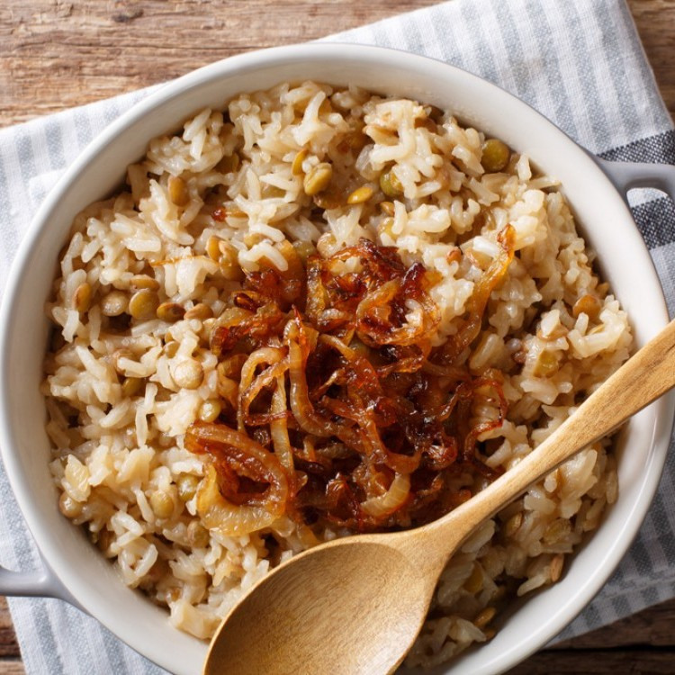
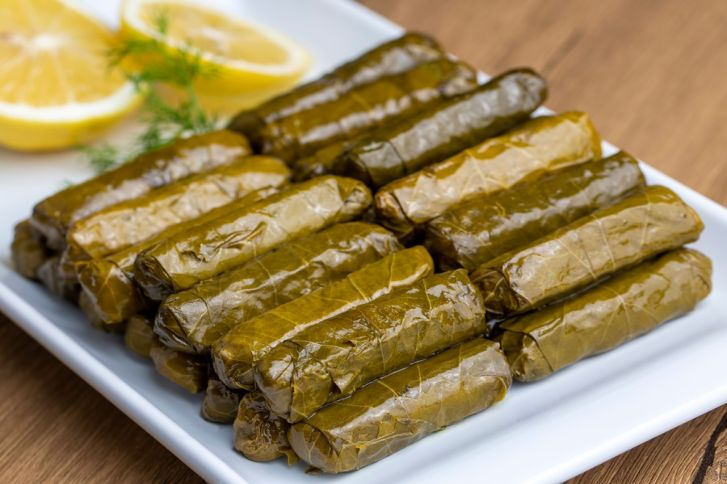

Great food, Traditional food
Lunch menu:
1. Mansaf , Price: 3.75 JD

2. Musakhan , Price: 3.00 JD

3. Maglobeh , Price: 3.50 JD

4. Mujaddarah , Price: 3.50 JD
5. Gedrah Khaleliah , Price: 4.00 JD

6. Yalangi , Price: 4.00 JD
Note: The meal is enough for one person